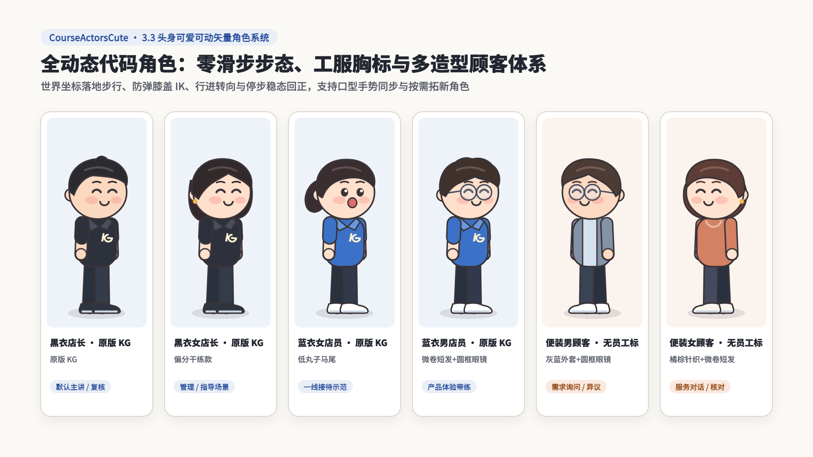
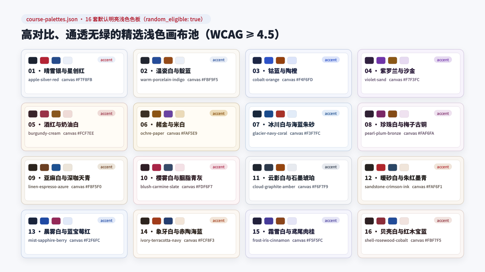

本宣传片即使用本 Skill 由 Antigravity 实渲制作 · 现已升级至 v8.1.1 电影级导演引擎
一句对话，把制度原件做成成套精品企业课
融合 elearning-course-design 2.1.2（ATD 教学设计 × 来源台账 × 无原件视角与零基础新人友好 × 去标题连读衔接）与 corporate-training-motion 8.1.1（DirectorStage 声画零抢跑词锚点与停稳运镜 × 定机位总结板书 × 融合进度胶囊分段导航条 × 强契约 CourseActorsCute × 本地 Qwen3-TTS 发音分离 × 双验收硬门禁），一次交付系列 1080p 视频、独立课件、讲义、测验题库与 A4 手写作业。
全程自产：Antigravity 调用本 Skill + Qwen3-TTS 本地双人配音 + 原库提示音效 +
verify_delivery.py 全项校验
下载 1080p MP4 · 下载无标点 SRT 字幕
最简安装方式 · 复制发给你的 AI 助手即可
把下面这句话发给你的 AI（Antigravity / Claude Code / Codex / Cursor / Windsurf / WorkBuddy）
请帮我安装这个企业培训制课 Skill：https://github.com/hebokenn/kgxc-corporate-course-skill
AI 会自动完成下载、环境自检与目录配置；也可手动下载 独立 Skill v8.1.1 ZIP。
01 · 双引擎教学设计 × 全套件交付
来源台账不漏条款，新人一遍听懂
自动读取 PDF/Word/PPT/扫描件与音视频，单列条件与例外、消除“如图/表中”悬空指代；坚持短促口语标题、隐藏小标题连读无缝衔接与零基础新人先白话后术语规则，按母版三选一定调后同步交付系列 1080p 视频、HTML/PPTX/PDF 课件、《讲义精要》、测验题库与 A4 手写作业。
02 · 8.1 导演引擎 × 分段导航与零抢跑硬门禁
声画严丝合缝，定机位板书零晃动
共享 DirectorStage 双层时间轴、phraseTime 声画零抢跑锚点与 steadyCamera 定机位总结卡；底部默认「融合进度胶囊」分段章节进度条（已学/当前推进/未学三态），经 render_audit 与抽帧双门禁拦截漂移、压字、剧透与单条回退。
核心能力实渲画廊


